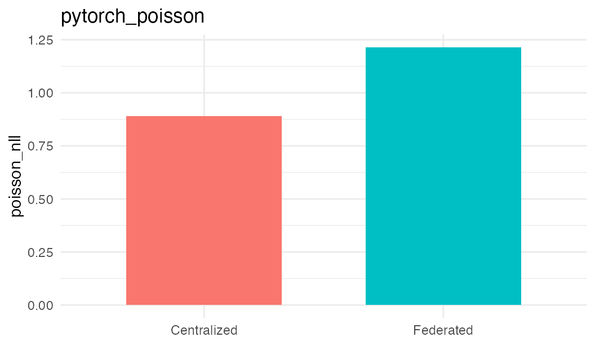

Validation: pytorch_poisson
validation-pytorch-poisson.RmdThis vignette records a live validation of the method against a centralized baseline. The federated run used three Opal/Rock nodes and the same pooled synthetic validation cohort was used for the local baseline. The purpose is method-path validation: data staging, template verification, Flower execution, result persistence, and cleanup. It is not a clinical performance benchmark.
overview <- data.frame(
Field = c(
'method', 'task', 'target', 'n_features', 'rounds',
'centralized_metric', 'centralized_loss', 'centralized_accuracy',
'federated_status', 'federated_loss', 'federated_n_failures',
'delta_loss', 'acceptance_max_loss_ratio',
'acceptance_max_loss_margin', 'acceptable_loss',
'validation_status'
),
Value = c(
row$method, row$task, row$target, row$n_features, row$rounds,
row$centralized_metric, fmt(row$centralized_loss), fmt(row$centralized_accuracy),
row$federated_status, fmt(row$federated_loss), fmt(row$federated_n_failures),
fmt(row$delta_loss), fmt(row$acceptance_max_loss_ratio),
fmt(row$acceptance_max_loss_margin), row$acceptable_loss,
row$validation_status
)
)
knitr::kable(overview)| Field | Value |
|---|---|
| method | pytorch_poisson |
| task | regression |
| target | count |
| n_features | 12 |
| rounds | 1 |
| centralized_metric | poisson_nll |
| centralized_loss | 0.8904 |
| centralized_accuracy | NA |
| federated_status | ok |
| federated_loss | 1.2141 |
| federated_n_failures | 0.0000 |
| delta_loss | 0.3237 |
| acceptance_max_loss_ratio | 2.5000 |
| acceptance_max_loss_margin | 0.2500 |
| acceptable_loss | TRUE |
| validation_status | pass |
loss_df <- data.frame(
mode = c('Centralized', 'Federated'),
loss = c(row$centralized_loss, row$federated_loss)
)
loss_df <- loss_df[is.finite(loss_df$loss), , drop = FALSE]
if (nrow(loss_df) > 0 && requireNamespace('ggplot2', quietly = TRUE)) {
ggplot2::ggplot(loss_df, ggplot2::aes(x = mode, y = loss, fill = mode)) +
ggplot2::geom_col(width = 0.65, show.legend = FALSE) +
ggplot2::labs(x = NULL, y = row$centralized_metric[[1]], title = method_id) +
ggplot2::theme_minimal(base_size = 11)
} else {
plot.new()
text(0.5, 0.5, 'No federated loss available for this method')
}
To reproduce only this method against configured Opal servers: